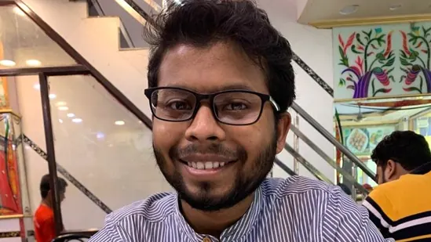
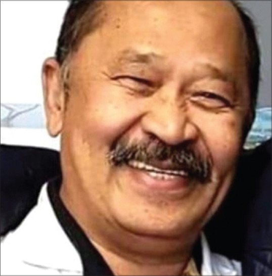

"Medicine cure diseases but only doctors can cure patients"
-Carl Jung
Some Brave and Inspiring Hearts who lost their lives while saving world from COVID-19
Dr ANAS MUJAHID
Dr Anas Mujahid, a resident of north-east Delhi’s Bhagirathi Vihar who completed his internship after MBBS in January,
was working at the hospital’s gynaecology ward as a junior resident.Dr Anas Mujahid was known to be hardworking,
the most humble and helpful person among his
colleagues and juniors at the University College of Medical Sciences (UCMS) at GTB hospital

A 26-year-old doctor at Guru Tegh Bahadur (GBT) Hospital, which has been converted into a designated Covid-19 hospital,
died within hours of testing positive for the infection on May 9 2021.Report said that Mujahid was Covid positive and suffered from
“intracranial hemorrhage” (bleeding within the skull, including the brain).However the young doctor treat Covid-19 patients till his
lat day.
Dr KK AGGARWAL
“Picture abhi baaki hai. The show must go on,” Padma Shri awardee Dr K K Aggarwal said in one of his last educational videos about
Covid before adding that he too was suffering from the virus. “I have Covid pneumonia which is progressive.
But even then, remember Raj Kapoor’s words ‘the show must go on’.”
The 62-year-old was a cardiologist, head of the Heart Care Foundation of India (HCFI) and former president of the Indian
Medical Association (IMA). He received the Dr BC Roy Award in 2005 and the Padma Shri in 2010.
Dr Aggarwal had done his schooling in Delhi and completed his MBBS from Nagpur University. He joined Moolchand Hospital in Delhi in 1983 and became a consultant there after five months of residency.
one of DR Aggarwal friend stated that “he had decided that he wanted to die while working”.
Dr Aggarwal passed away at Delhi’s All India Institute of Medical Sciences
after a long battle with the virus on May 18.
Dr. Li Wenliang
The death that broke several hearts in the initial days of coronavirus spread was of Dr. Li Wenliang, a Chinese ophthalmologist who tried to warn fellow practitioners about the
potential outbreak of a virus. Unfortunately, he was accused of making false claims and misleading the public. Dr. Li's warning did not depend on sophisticated laboratory testing or expensive
imaging studies, but on his own understanding of biological plausibility—the kind of analysis that clinicians of all specialties
could make. The New York Times reported that on January 10, 2020, Dr Li developeda cough after
having treated a woman for glaucoma who had unknowingly been infected with the coronavirus, probably by her daughter.
No report suggests that he observed any ophthalmologic complications of the coronavirus infection in his patient.
The 34-year-old eye specialist, in his Weibo story, revealed how he had come down with cough and fever after a month of his warning going unnoticed.
The doctor had contracted the virus while treating a glaucoma case (suffering from corona virus) in Wuhan. Dr. Li passed away on February 7,
2020 leaving the people in China and worldwide grieving and angry.
Another doctor who died of the disease in Wuhan was just 29 years old.
As per the reports, he had postponed his Lunar New Year marriage to serve humanity and treat patients who had been hit by the virus.
Unfortunately, he ended up contracting the virus from one of his patients and died a hero.
Dr. Jean-Jacques
Jean-Jacques Razafindranazy was the first French doctor who died while treating coronavirus patients. The 68-year-old accident and emergency department
doctor was retired but the passion that he had for serving humanity was undying. Thus, he volunteered to help his colleagues save the lives of people, as the number of incoming patients continued to increase.

The retired doctor was working in an emergency ward at the Lille University Hospital where he caught the disease. His death was announced through a social media post titled “My Father: A Hero“ written by his family.